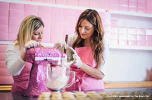

The cupcake sister's, meet Katherine and Sophie.
Sisters Katherine Kallinis Berman and Sophie Kallinis LaMontagne are the co-founders of Georgetown Cupcake, stars of the hit series DC Cupcakes on TLC, and best-selling authors of The Cupcake Diaries and Sweet Celebrations.
Inspired by their grandmother, in 2008, Katherine and Sophie traded careers in fashion and venture capital to follow their passion for baking and opened Georgetown Cupcake in Washington, DC. Since 2008, Katherine and Sophie have expanded Georgetown Cupcake with locations in Bethesda, MD, New York City/SoHo, Boston/Newbury St, and Los Angeles. Georgetown Cupcake ships its cupcakes nationwide and offers over 100 flavors.
Sophie and Katherine and their cupcakes have been featured in The New York Times, The Wall Street Journal, USA Today, The Washington Post, Better Homes and Gardens, Food & Wine, TV Guide, the NBC Today Show, The Martha Stewart Show, The Oprah Winfrey Show, Live! With Kelly, ABC Nightline, Access Hollywood, Extra, Entertainment Tonight, People, InStyle, Town & Country, US Weekly, Redbook, Real Simple, and Cosmopolitan.
Celebrate with cupcakes. Georgetown Cupcake creates memorable cupcakes for the special events in life. For more information or to inquire about special event or large volume orders, please contact our catering managers at each of our locations.
Source: George Town Cupcakes